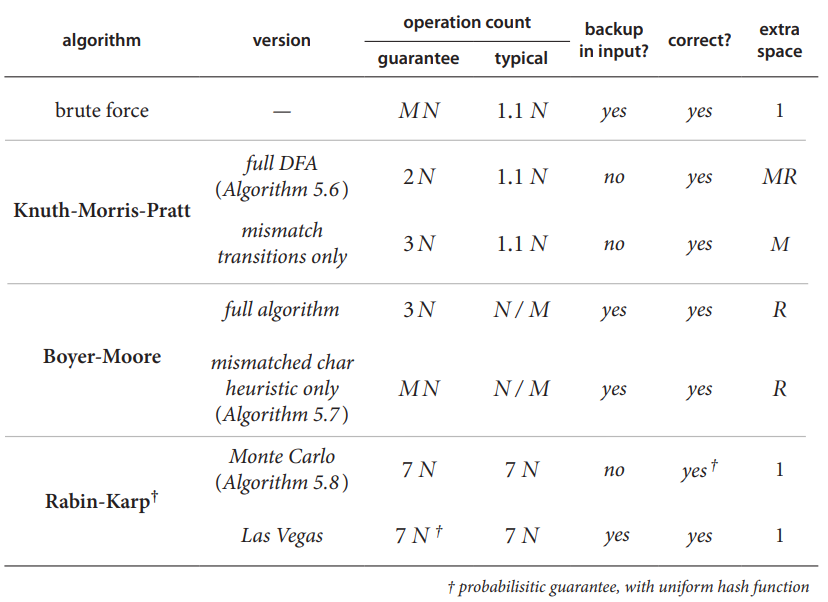
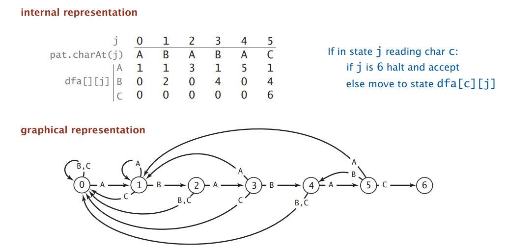
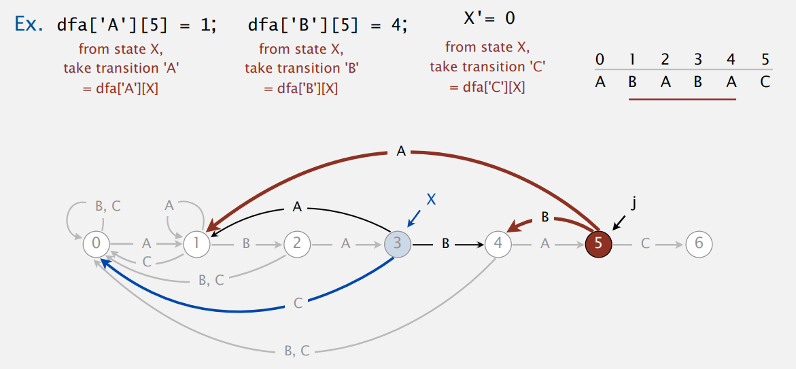
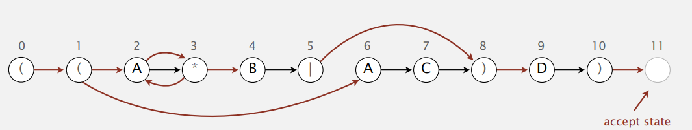
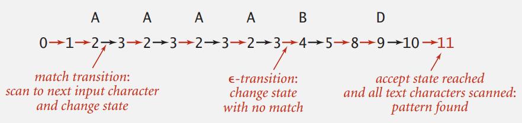
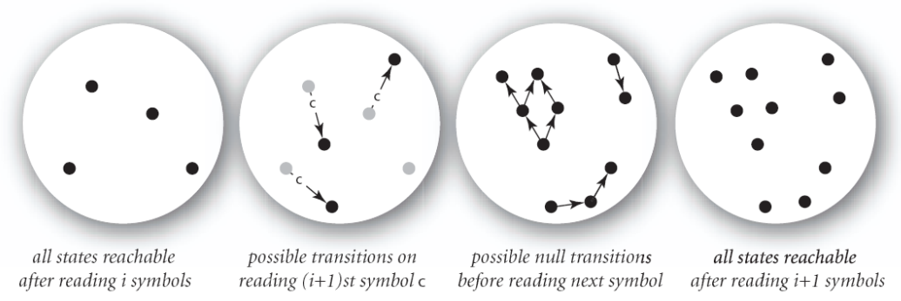
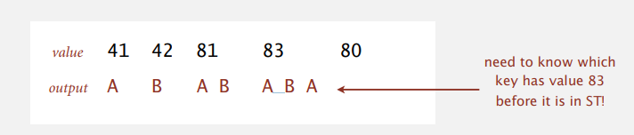

Algorithms II, Princeton University, P7
Algorithms I & II, Princeton 系列笔记的 P7 部分。字符串算法博大精深，远非一篇笔记就能囊括。上一篇笔记主要关注字符串排序问题，而本篇将着重介绍以字符串为键值的 symbol tables 与 substring search 问题。
- Tries: traditional R-way tries & ternary search tries.
- Substring Search: Knuth-Morris-Pratt, Boyer-Moore, Rabin-Karp.
- Pattern Matching: Regular expressions (regex).
- Data Compression: Huffman & LZW compression. (trie plays an important role!)
This article is a self-administered course note.
It will NOT cover any exam or assignment related content.
Tries
用红黑树或 linear-probing hashing 实现的 string symbol tables 已经拥有较为优秀的效率；但一个更为 ingenious 的，string-specialized 的数据结构是 tries (字典树)。
R-way Tries
Tries 的名字来源于 retrieval，但读作 try。相当简单优雅的数据结构，就不详细介绍了。
- Search hit. Need to examine all \(L\) characters for equality.
- Search miss. (typical case) examine only a few characters (sublinear).
- Space. \(R\) null links at each leaf.
trie 的删除操作也十分简单：
- Find the node corresponding to key and set value to null.
- If node has null value and all null links, remove that node (and recur).
1 | // This is a Trie Symbol Table, which associate a value with each string key. |
Ternary Search Tries
又是 Sedgewick 教授发明的算法之一 (Bentley & Sedgewick)，ORZ。
- Store characters and values in nodes (not keys).
- Each node has 3 children: smaller (left), equal (middle), larger (right).
- Search or Insert.
- If less, take left link; If greater, take right link.
- If equal, take the middle link and move to the next key character.
TSTs 改善了传统 R-way tries 耗费空间过多的缺点 (从 \((R+1)N\) 优化至 \(4N\))，同时仍然维持了 tries 优秀的时间效率 (从 \(L\) 到可以接受的 \(L+\ln{N}\))。
TSTs 还存在许多 variants：balanced TSTs via rotations (can achieve worst-case \(L+\log{N}\) guarantees) 与 TSTs with \(R^2\) branching (对特定的输入进一步提升时空效率)。
总而言之，TST 是这样的一种数据结构，它：
- Faster than hashing (especially for search misses).
- More space-efficient than R-way tries.
- More flexible than red-black BSTs.
1 | public class TST<Value> { |
Character-Based Operations
以 string 作为键值的 string symbol table implemented with tries 不仅仅支持以 string 为基本单位的操作，更支持基于字符的操作 (character-based operations)。
- Ordered iteration (引入了利用 trie 进行 string sorting 的新思路).
- Do inorder traversal of trie; add keys encountered to a queue.
- Maintain a sequence of characters on path from root to node.
- Prefix matches. Find all keys in a symbol table starting with a given prefix.
- Longest prefix. Find longest key in symbol table that is a prefix of query string.
- T9 texting.
- Multi-tap input. 不断按某键直到切换到想要的字母。
- T9 text input. Find all words that correspond to given sequence of numbers.
- Patricia trie (crit-bit tree, radix tree). 将 trie 上的 internal one-way branching (象征着多个字符串的共同前缀) 压缩成一个节点，提升了 trie 的空间利用率。
- Suffix tree. Patricia trie of suffixes of a string; can be constructed in linear time.
最后，我们再来对 string symbol table 的不同实现进行一个全面的比较与总结：
| Implementation | Performance Guarantee | Features |
|---|---|---|
| Red-black BST. | \(\log{N}\) key (string) compares. | Supports ordered symbol table API. |
| Hash tables. | constant number of probes. | Requires good hash function for key type. |
| R-way tries or TSTs. | \(\log{N}\) characters accessed. | Supports character-based operations. |
Substring Search
Substring search 也是一个相当 fundamental 的字符串问题。用一句话就可以概括：
Brute-force substring search. Check for pattern starting at each text position.
1 | public static int search(String pat, String txt) { |
暴力做法的最坏时间复杂度是 \(\sim MN\) 的。另外，由于每次失配时 text pointer 将会回滚 (backup)，使得该做法无法适应文本的流式输入 (text string)；我们需要更加优秀的 substring search 算法。

Knuth-Morris-Pratt
很早以前就学过并被惊艳过的 KMP 算法；今天以另外的角度来学习这个算法，倍感新鲜。
首先来介绍一下 DFA (deterministic finite state automaton, 有限状态自动机)。
- Finate number of states (including start and halt).
- Exactly one transition for each char in alphabet.
- Accept if sequence of transitions leads to halt state.

上图是 pattern ABABAC 构建的 KMP
自动机；其接受且仅接受以该 pattern 为后缀的字符串。将给出的 text stream
输入该 DFA，若在某个时刻能够到达 halting state，说明匹配成功。
这是因为 text stream 在该时刻形成的前缀被 KMP 自动机接受了；根据 KMP
自动机的性质，这一前缀一定存在某个 ABABAC
的后缀。而字符串前缀的后缀一定是该字符串的子串：据此我们成功将
substring search 问题转化为了基于 pattern 的 KMP 自动机构建问题。
KMP 自动机的 internal representation 是一个二维数组
dfa[][]: dfa[c][j] 存储了状态 \(j\) 在读取字符 \(c\) 后转移到的状态 \(k\)。
Match transition.
- Descriptive. If first \(j\) characters of pattern have already been matched and next char also matches, then first \(j+1\) characters of pattern will be matched.
- Operative. If in state \(j\) and next char \(c = \mathtt{pat}[j]\), go to state \(j+1\).
Mismatch transition. (!) If in state \(j\) and next char \(c \neq \mathtt{pat}[j]\), then the last \(j-1\) characters of input are \(\mathtt{pat}[1...j-1]\), followed by \(c\).
根据 KMP 自动机的定义，在字符 c
被读入后，我们将转移到一个状态 \(k\)，在该状态中 \(\mathtt{pat}[0...j-1]+c\) 的某个长度为
\(k\) 的后缀将与 \(\mathtt{pat}[0...k-1]\) (pattern 长度为
\(k\) 的前缀) 匹配。
在第一种情况 (match transition) 下，显然 \(k = j+1\)。想要找到失配情况下的 \(k\) 则比较 tricky。
我们不妨这样解读 KMP 自动机：对于输入的字符串 \(s\) 与某个 pattern，KMP 自动机将会把 \(s\) 的所有后缀与 pattern 进行匹配，并且返回匹配长度最长的后缀，该后缀的长度为 \(k\)。
能够证明的是，字符串 \(s_1=\mathtt{pat}[0...j-1]+c\) 与 \(s_2=\mathtt{pat}[1...j-1]+c\) 输入 KMP 自动机后得到的结果后缀是相同的。\(s_1\) 除了比 \(s_2\) 多出了一个后缀以外完全相同，而这个多出来的后缀 \(\mathtt{pat}[0...j-1]+c\) 不可能是 KMP 自动机返回的结果：这正是由失配 (mismatch transition) 的条件决定的。
To compute dfa[c][j]: Simulate \(\mathtt{pat}[1...j-1]\) on DFA and take
trancision \(c\).
- plain simulation: takes linear time.
- maintain \(\mathtt{pat}[1...j-1]\) as restart state \(X\): takes only constant time.

1 | public KMP(String pat) { |
从有限状态自动机的角度来理解 KMP 对我来说确实是一个全新的视角：但是构造 KMP 自动机的时空代价是 \(\sim RM\)，这比我之前学习的构造 fail 指针 (标记最长公共前后缀) 的 KMP 算法多了一个小常数 \(R\)。
Boyer-Moore
Boyer-Moore 是一种启发式的字符串匹配算法，其包含两种规则：坏字符启发 (bad character heuristic) 与好后缀启发 (good suffix heuristic). BM 算法的 intuition 在于：
- Scan characters in pattern from right to left.
- Can skip as many as \(M\) text chars when finding one not in the pattern.
问题在于 how much to skip。
我们定义 \(i\) 为定位指针，它所指向的 text 中的字符总是与 pattern 的首字符对齐；定义 \(c\) 为当前的失配字符 (mismatch character)。具体的例子见 slides 53-SubstringSearch。
- Case 1 - \(c\) not in pattern. increment \(i\) one character beyond the mismatch character.
- Case 2 - \(c\) in pattern.
- Case 2a - align the text \(c\) with rightmost pattern \(c\).
- Case 2b (heuristic no help since backup will happen) - increment \(i\) by 1.
虽然 BM 算法的平均时间复杂度十分优秀，但其最坏时间复杂度仍然是 \(\sim MN\)。但通过向其中添加 KMP-like rule 形成的 BM variant 可以保证最坏 \(\sim 3N\) 的时间复杂度。
1 | public int BMsearch(String text) { |
Rabin-Karp Fingerprint Search
在 Brute-force 的基础上，RK 算法使用 modular hash 进行快速的字符串比较从而大大改善了时间复杂度。
- Compute a hash of pattern characters \(0\) to \(M-1\).
- For each \(i\), compuate a hash \(x_i\) of text characters \(i\) to \(M+i-1\). (Horner's method)
- If pattern hash = text string hash, check for a match.
- We can update hash function in constant time: \(x_{i+1}=(x_i-t_iR^{M-1})R+t_{i+M}\).
Rabin-Karp 算法有两种实现的方式：
- Monte Carlo version - return match if hash match: linear-time guarantee but not always return the correct answer.
- Las Vegas version - always returns correct answer: worst-case running time is \(MN\) (backup).
1 | public class RabinKarp { |
Regular Expression
正则表达式是解决 pattern matching 问题的有力武器。与 substring search 问题不同，pattern matching 问题要求在文本中找到所有匹配给定 pattern 的字符串集合，而不是某个单独的精确匹配的子串。
正则表达式的基本 operations 有四种，按优先级从大到小分别是 ：
- parentheses. ex.
(AB)*A - closure. ex.
AB*A - concatenation. ex.
ABA - or. ex.
AA | ABA
此外还有几个约定俗成的 additional operations，比如：
- wildcard. ex.
.U.U.U. - character class. ex.
[A-Za-z][a-z]* - at least \(1\). ex.
A(BC)+DE - exactly \(k\). ex.
[0-9]{5}-[0-9]{4}
教授在这一节的末尾对正则表达式做了一个很精准的总结："REs are amazingly powerful and expressive, but using them in applications can be amazingly complex and error-prone."
Nondeterministic Finite-State Automata
在介绍 KMP 算法时，我们引入了 DFA (deterministic finite-state automata, 确定性有限状态自动机) 的概念并以此为基础构造了 KMP 自动机。类似的，对于 RE 我们也能构建对应的 DFA。根据 Kleene's theorem 有:
- For any DFA, there exists a RE that describes the same set of strings.
- For any RE, there exists a DFA that recognizes the same set of strings.
因此，我们能够提出用 RE 实现 pattern matching 的 basic plan：
- Build DFA from RE.
- Simulate DFA with text as input. Pattern matched if it reaches the halting state.
然而，理想很美好，现实很残酷，basic plan 实际上是 infeasible
的。这是因为我们构建的 DFA may have exponential number of states.
例如给出的 pattern 为 a.......，每多一个 wildcard，DFA
的状态数就将增加 \(R\) 倍；有 \(n\) 个 wildcard 的 RE 所构建的 DFA
将具有至少 \(R^n\) 个状态。
为了解决这个问题，NFA (nondeterministic finite-state automata，非确定性有限状态自动机) 横空出世。不得不说这真的是一个非常天才的想法。我们构造 Regular-expression-matching NFA 如下：
- We assume RE enclosed in parentheses.
- One state pre RE character (start = 0, accept = M).
- Red \(\varepsilon\)-transition only changes state, but do not scan text.
- Black match transition changes state and scan to next text char.
- Accept if any sequence of transitions ends in accept state.

可以看到，NFA 中的状态数只与 RE 的长度有关；并且它巧妙地将 transitions 分为两种，红色的 \(\varepsilon\) 转移与黑色的 match 转移。其中，利用 \(\varepsilon\) 转移可以在不读入字符的前提下转移到新的状态。
这一设计虽然天才，但是也同时带来了不确定性 (nondeterminism)。与 DFA 中 sequence 作为一个确定的 “解” 不同，NFA 中的 sequence 更像是：
- One view: machine can guess the proper sequence of state transitions.
- Another view: sequence is a proof that machine accepts the text.

可以看到，NFA 中存在若干个 applicable transitions，因此 NFA simulation 远比 DFA simulation 更加 tricky: we need to systematically consider all possible transition sequences.
NFA Simulation
在理解了 NFA 的原理之后，其 simulation 也变得十分简单。我们利用类似多源 BFS 的思路模拟每一步能够到达的状态的集合 (“一步”代表读入一个 text character)。具体实现上，我们：
- State names. Integers from \(0\) to \(M\) (number of symbols in RE).
- Match-transitions. Keep regular expression in array
re[]. - \(\varepsilon\)-transitions. Store in a diagraph \(G\).
- Simulation. Maintain set of all possible (reachable) states that NFA could be in after reading in the first \(i\) text characters. 其中 reachable states 用 DFS 即可找到。

1 | public class NFA { |
NFA Construction
NFA construction 本质上是图的构建，而图的形式是由 RE 对各种 operations 的定义决定的。这里将着重介绍 RE 中四种基本 operations 的连边方式。(slide 54RegularExpressions.pdf 上有对应的实例图，很清晰)
- Concatenation. Add match-transition edge from state corresponding to characters to next state.
- Parentheses. Add a \(\varepsilon\)-transition edge from parentheses to next state.
- Closure. Add three \(\varepsilon\)-transition edges for each
*operator.- character/closure expression to
*. *to characte/closure expression.*to next state.
- character/closure expression to
- Or. Add two \(\varepsilon\)-transition edges for each
|operator.
可以发现 or 操作一定是与 parentheses 伴生的，且只有在右括号的位置确定后才能确定如何连边，因此用栈来维护是一个很自然的想法。
对于长度为 \(M\) 的RE 中的每个字符，我们最多执行三次连边操作与两次栈操作，可以视为 constant-time。
1 | private Digraph buildEpsilonTransitionDigraph() { |
Regex Miscellaneous
Generalized RE Print
Generalized/Global regular expression print (grep, 全局正则表达式打印) 我们应该再熟悉不过了。在学习了 RE NFA 的 simulation 与 construction 之后，我们也能自己实现 grep。
1 | public class GREP { |
grep 的最坏时间复杂度与 substring search 问题的 brute-force 算法相同，均是 \(\sim MN\)；但 pattern matching 问题确实要比 substring search 更加 fundamental。
Not-So-Regular Expressions
正则表达式能描述特定的字符串集合 (pattern)，那么是否所有的 pattern 都能被正则表达式表示呢？答案是否定的。举几个非正则 (non-regular) pattern 的例子：
- String of the form \(ww\) for some
string \(w\):
beriberi. - Unary strings with a composite number of 1s:
111111,1111,11... - Bitstrings with an equal number of 0s and 1s:
01110100. - Palindromes.
abccba.
还有一个许多编程语言中支持的 RE additional operation,
back-references: \1 notation matches subexpression
that was matched earlier. 但实际上，这一 feature 将会令 pattern matching
问题变得 intractable。
Abstract Machines
Abstract machines, languages, and nondeterminism.
- Basis of the theory of computation.
- Basis of programming languages.
实际上我们熟悉的 compiler 本质上与 DFA，NFA 这些 abstract machines 没有区别：它们都将某种“程序” (program) 翻译成另一种“机器码” (machine code)，再由 executor (即 simulator) 进行执行。
- KMP: string => DFA => DFA simulator.
grep: RE =? NFA => NFA simulator.javac: Java language => Java byte code => JVM.
Data Compression
我一直很好奇数据压缩的原理：我们常用的 zip,
7z 等压缩软件，到底是依据什么样的原理进行工作的呢？
先介绍几个数据压缩中的常用术语：
- Message. Binary data \(B\) we want to compress.
- Compress. Generate a "compressed" representation \(C(B)\).
- Expand. Reconstructs original bitstream \(B\).
- Compression ratio. Bits in \(C(B)\) / bits in \(B\).
一般来说，被压缩的数据都是 Standard ASCII characters: 每个 ASCII 字符
(char) 都占 8 bits。
用反证法简单证明：如果 universal data compression 算法存在，那么对于某个 bitstream \(B\)，我们不断对其应用该算法，理论上可以将空间压缩至 0；这显然是不合理的。
Run-Length Coding
Run-length coding 是一个简单的数据压缩算法：对于 long runs of repeated bits，我们用 4-bits counts to represent alternating runs of 0s and 1s。
0000000000000001111111000000011111111111 (40 bits) =>
15 0s, then 7 1s, then 7 0s, then 11 1s =>
1111011101111011 (16 bits)。这 16 bits，每 4 bits 分别是
15, 7, 7 与 11 的二进制表示。
在实际应用中，我们一般用一个 8-bits string 来记录 run-length。也就是说，若某个连续的 \(0/1\) 段的长度超过 \(2^8-1=255\) 时，我们需要 intersperse runs of length 0。(例如，当一个长度超过 255 的 \(0\) 段出现时，我们将其分为两个长度小于 255 的 \(0\) 段并用一个形式化的长为 0 的 \(1\) 段隔开)
1 | public class RunLength { |
Huffman Compression
我们常常能发现，一些 encoding 方式会导致
ambiguity：比如这一段摩斯电码 ***---*** 可以解释为
SOS，V7，IAMIE 与 EEWNI。在实际应用中，摩斯电码在每个 codewords
间停顿一段时间以作区分。
但对于 data compression 我们需要采取另外的方式来避免 ambiguity: we need to ensure no code word is a prefix of another.
- Ex 1. Fixed-length code.
- Ex 2. Append special stop char to each codeword.
- Ex 3. General prefix-free code.
很巧妙的是，prefix-free code 可以用一颗 binary trie 来表示！
- Char in leaves.
- Codeword is path from root to leaf.
1 | private static class Node implements Comparable<Node> { |
这样，对于一个给定的用 binary trie 表示的 prefix-free coding scheme 与一段待压缩的 message，我们能够轻易的进行 compression (从 leaf 开始向上) 与 expansion (从 root 开始向下)。以 expansion 为例：
1 | public void expand() { |
现在，问题来到如何构建一颗 optimal prefix-free binary trie。Huffman tree 是一个绝佳的选择：
- Count frequency
freq[i]for each chariin input. - Start with one node corresponding to each char
i(with weightfreq[i]). - Repeat until a single binary trie formed:
- select two tries with min weight
freq[i]andfreq[j] - merge into single trie with weight
freq[i] + freq[j]
- select two tries with min weight
Huffman tree 贪心的对当前权值最小的两颗 trie 进行二叉合并，可以证明这样做能够使得权值越大的叶子节点离根节点的距离越远。也就是说，出现频率越高的字符，其编码 (codeword) 的长度越短。
1 | private static Node buildTrie(int[] freq) { |
LZW Compression
与 static model (ex. ASCII, Morse code) 与 dynamic model (ex. Huffman code) 不同，LZW code 是一种 adaptive model: it progressively learn and update model as you read text.
LZW 算法维护一个 symbol table，其中记录着一系列 string-code 的映射。与 Huffman code 逐字符编码的方式不同，LZW 算法能够为特定的字符串进行编码。
与 Huffman code 相同的是，LZW 中的 symbol table 也用 trie 进行实现 (但并非 binary trie)；并且该 trie 需要支持 longest prefix match 操作。这是因为 LZW compression 的步骤如下：
- Create ST associating \(W\)-bit codewords with string keys.
- Initialize ST with codewords for single-char keys.
- (longest prefix match) Find longest string \(s\) in ST that is a prefix of unscanned part of input.
- Write the \(W\)-bit codeword associated with \(s\).
- Add \(s+c\) to ST as an update, where \(c\) is the next char in the input.
1 | public static void compress() { |
LZW expansion 需要在 decode 的同时 reconstruct the symbol table. 其步骤如下：
- Create ST associating string values with \(W\)-bit keys.
- Initialize ST to contain single-char values.
- Read a \(W\)-bit key.
- Find associated string value in ST and write it out.
- Update ST.
注意，LZW expansion 存在一种 tricky case 需要 handle: 尝试 expand 以下例子，可以发现有时我们会遇到 symbol table 中当前未记录的编码。(具体的处理方式 not cover in this class)

LZW 与 Huffman compression 都是一种 loseless compression (我们熟悉的 JPEG, MP3 compression 均不属于此类，它们是 lossy compression)，并且都被 Shannon entropy 理论所限制。它们最大的区别在于：
- LZW: represent variable-length symbols with fixed-length codes.
- Huffman: represent fixed-length symbols with variable-length codes.
Reference
This article is a self-administered course note.
References in the article are from corresponding course materials if not specified.
Course info:
Algorithms, Part 2, Princeton University. Lecturer: Robert Sedgewick & Kevin Wayne.
Course textbook:
Algorithms (4th edition), Sedgewick, R. & Wayne, K., (2011), Addison-Wesley Professional, view